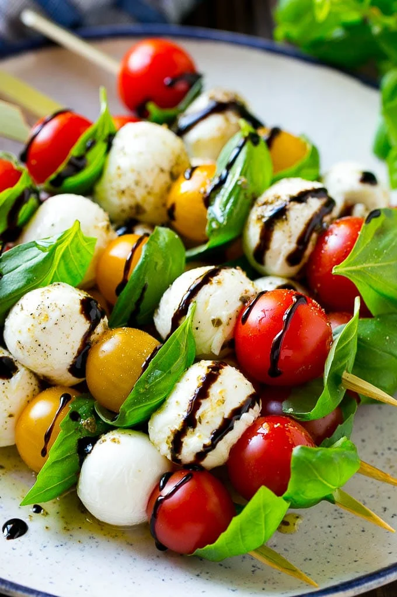
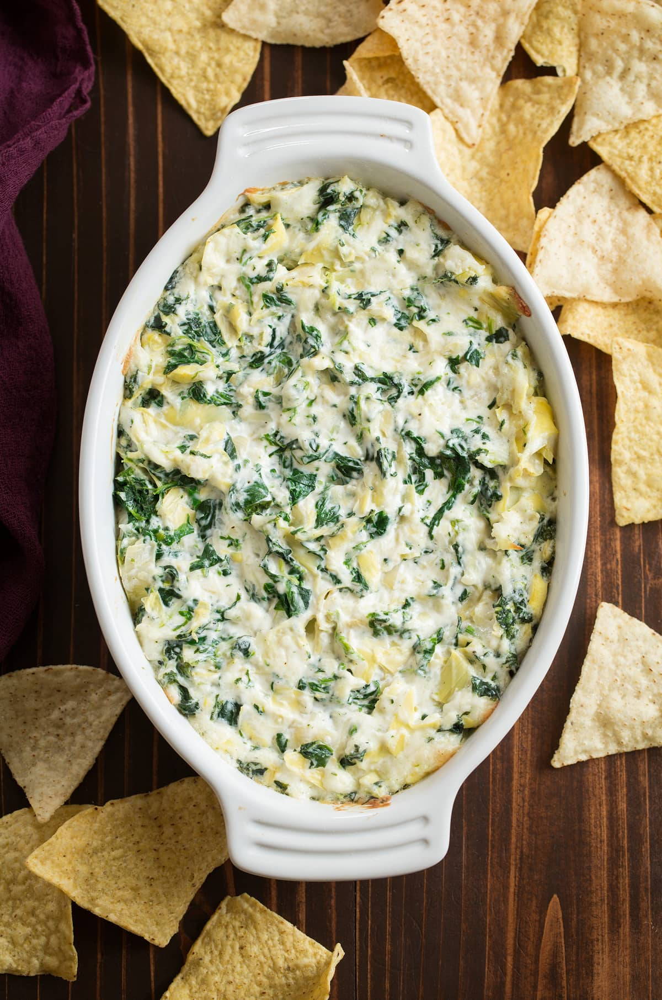
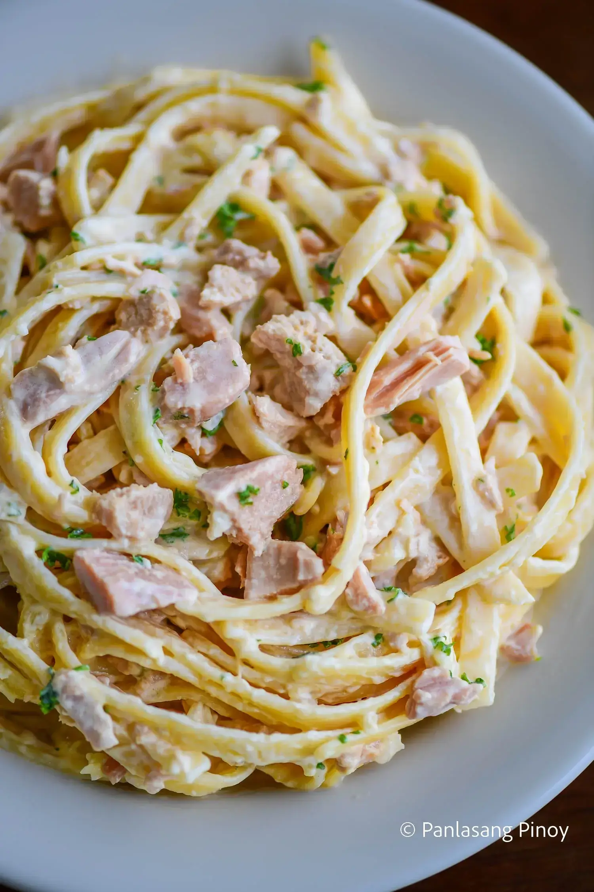
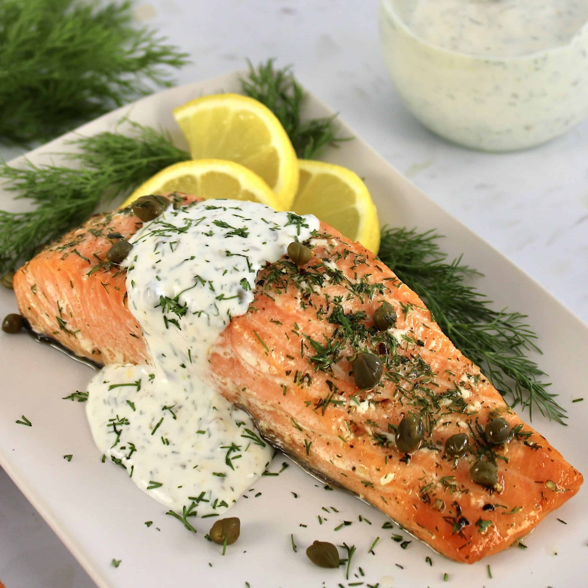
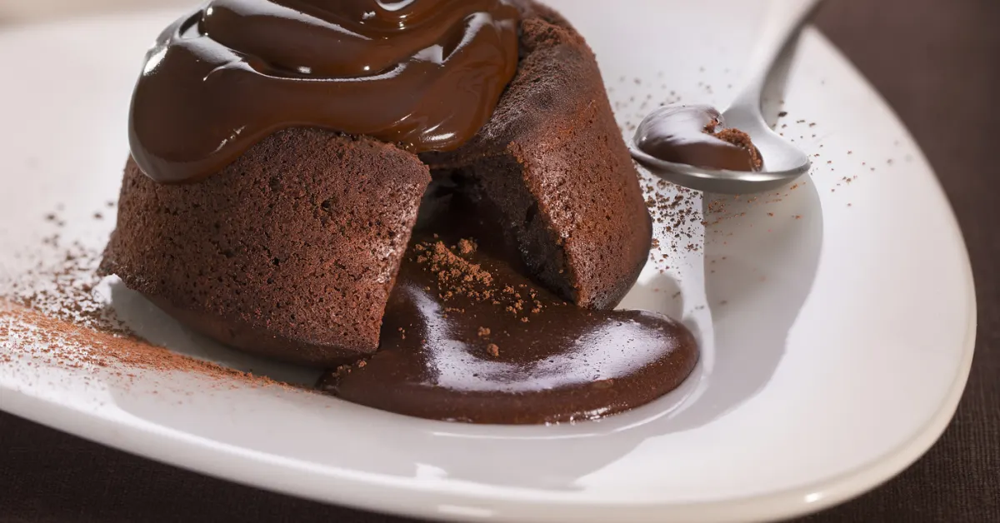

Appetizers
Caprese Skewers
Fresh and vibrant, Caprese Salad Skewers feature juicy cherry tomatoes, creamy mozzarella, and fragrant basil leaves, all threaded together on skewers. Drizzled with olive oil and balsamic glaze, they offer a perfect balance of savory and tangy flavors in every bite.
Spinach and Artichoke Dip
A creamy, cheesy dip made with artichoke hearts and spinach, perfectly blended with sour cream, mayonnaise, and Parmesan. Baked to golden perfection, this dip is rich, comforting, and served best with crispy chips, crackers, or bread for dipping.
Main Courses
Chicken Alfredo Pasta
A rich and creamy pasta dish, featuring fettuccine tossed in a luscious Alfredo sauce made with butter, garlic, heavy cream, and Parmesan. Topped with juicy, pan-seared chicken breast, this comforting dish is a perfect combination of flavors that will satisfy any craving.
Grilled Salmon with Lemon-Dill Sauce
Grilled to perfection, this salmon is flaky, tender, and slightly charred on the outside, while remaining juicy inside. Its served with a refreshing lemon-dill sauce that adds a zesty, creamy contrast, making for a light yet satisfying main course.
Desserts
Classic Vanilla Ice Cream

A creamy, smooth dessert made with a simple blend of heavy cream, whole milk, and sugar, infused with pure vanilla extract. This classic treat offers a refreshing, rich flavor that melts effortlessly in your mouth, perfect for pairing with any dessert or enjoying on its own.
Chocolate Lava Cake with Chocolate Mois (Ganache)
A rich and indulgent dessert, the chocolate lava cake is a decadent treat with a warm, gooey center that flows out like molten chocolate when cut into. The exterior is soft yet firm, perfectly complemented by a silky chocolate ganache drizzle. Served with a scoop of homemade vanilla ice cream, its the ultimate chocolate lovers dream!